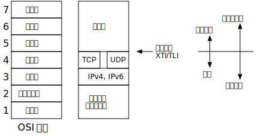

OSI 模型
描述一个网络中各个协议层的常用方法是使用国际标准化组织 (International Organization for Standardization, ISO) 的计算机通信开放系统互连 (open systems interconnection, OSI) 模型。 这是一个七层模型，下图是它与网络协议族的近似映射

TCP 与 UDP 直接留有间隙，表明网络应用绕过传输层直接使用 IPv4 或 IPv6 是可能的。 这就是所谓的原始套接字 (raw socket)
OSI 模型的顶上三层被合并成一层，称为应用层，对于网络协议，OSI 模型的顶上三层协议几乎没有区别